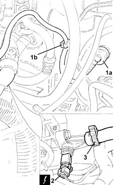
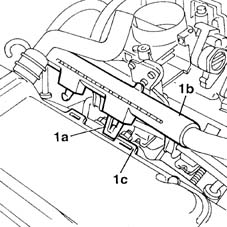
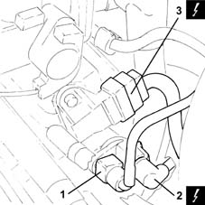
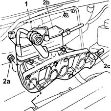
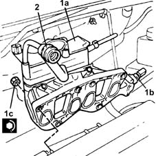

1072B10 inlet manifold - r + r and replace seal
- Path
- Procedures > 10 ENGINE > 1072 INLET AND EXHAUST MANIFOLDS > 1072B inlet manifolds > 1072B10 inlet manifold - r + r and replace seal
- Kind
- repair procedure (removal / refitting; the operation number is the code)
- Applies to
- engines: 1.2 8v; all production periods
- Interactive page
- https://sloeber94.github.io/elrnDB-lYpsln/en/#/2428936
Applies to: engines: 1.2 8v; all production periods
 Removing
Removing
 Refitting
RefittingEnsure that the ignition key is in OFF position, then disconnect the battery negative terminal (-).
 | Name | Connector |
|---|---|---|
- | Battery |
Proceed with removal 1048A10 air cleaner filtering element - replace .
1. Prise up single-acting valve (1a) from the brake servo and release the pipe (1b) from the retaining band.
2. Disconnect the electrical connection from the engine coolant temperature sensor.
| Name | Connector |
|---|---|---|
2 | Engine temperature sender unit |
3. Loosen the band and disconnect the coolant return pipe to the climate control heater, engine coolant sensor side.

Applies to: engines: 1.2 8v; all production periods
1. Undo retaining clip (1a) and release electrical cable duct (1b) from slots (1c) on the cam cover.

Applies to: engines: 1.2 8v; all production periods
1. Disconnect the rapid attachment coupling for the fuel vapour recover pipe, solenoid side.
2. Disconnect the electrical connection from the inlet fuel vapour enabling solenoid valve.
| Name | Connector |
|---|---|---|
2 | Fuel vapour recovery solenoid |
3. Disconnect the electrical connection from the intake air temperature/pressure sensor.
| Name | Connector |
|---|---|---|
3 | Integrated air temperature sensor |

Applies to: engines: 1.2 8v; all production periods
Proceed with removal 1056B60 single fuel manifold pipe, with injectors - r + r .
Proceed with removal 1056B14 throttle case - r + r .
Release the injector electrical wiring from the bands behind the intake manifold.
1. Disconnect the engine oil vapour recovery pipes from the cam cover.
2. Undo nuts (2a) and remove the intake manifold (2b) complete with engine coolant sensor (2c).

Applies to: engines: 1.2 8v; all production periods
Refitting
Removing1. Refit intake manifold (1a), complete with engine coolant temperature sensor (1b) and secure by tightening nuts (1c) to the recommended torque.
 | Fastening | Component | Ø | Value (daNm) |
|---|---|---|---|---|
1c | Nut | INLET MANIFOLD | M8 | (Cylinder head side) 2.7 |
2. Connect the engine oil vapour recovery pipes to the cam cover.

Applies to: engines: 1.2 8v; all production periods
Secure the injector electrical wiring using the bands located behind the inlet manifold.
Proceed with refitting 1056B14 throttle case - r + r .
Proceed with refitting 1056B60 single fuel manifold pipe, with injectors - r + r .
Connect the electrical connection to the intake air temperature/pressure sensor.
Connect the electrical connection to the inlet fuel vapour enabling solenoid valve.
Connect the rapid attachment coupling for the fuel vapour recovery pipe, solenoid side.
Secure the injector wiring duct to the slots on the cam cover using the clip.
Connect the engine coolant return pipe to the climate control system heater, engine coolant temperature side, and tighten the band.
Connect the electrical connection to the engine coolant temperature sensor.
Connect the single-acting valve to the brake servo and secure the pipe using the band.
Proceed with refitting 1068A10 accelerator pedal control - check, adjust if necessary and lubricate .
Proceed with refitting 1048A10 air cleaner filtering element - replace .
Refill the engine cooling system with coolant 0010T20 coolant change .
Connect the negative (-) battery terminal.
Topics linked from this page (9)
- 0010T20 coolant change
- 1048A10 air cleaner filtering element - replace
- 1056B14 throttle case - r + r
- 1056B60 single fuel manifold pipe, with injectors - r + r
- 1068A10 accelerator pedal control - check, adjust if necessary and lubricate
- A1B Battery ( BATTERY NEGATIVE )
- K36 Engine temperature sender unit
- K43 Integrated air temperature sensor
- L10 Fuel vapour recovery solenoid